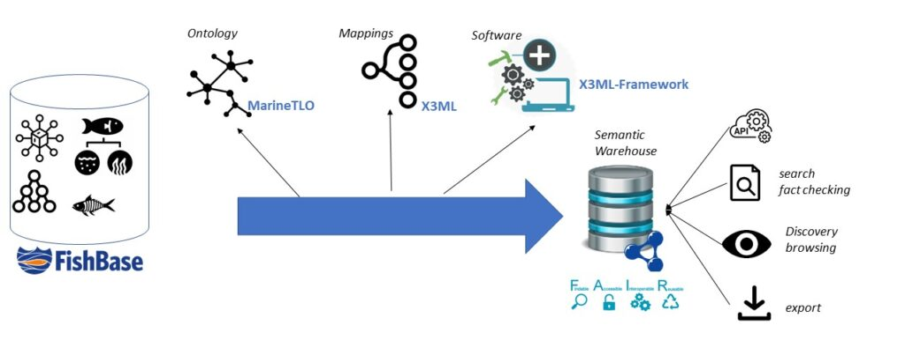

About SemantyFish
SemantyFish aims to transform FishBase into a semantic web knowledge base using cutting-edge semantic web technologies. By structuring data with standard vocabularies and ontologies, the project will enhance data interoperability, making FishBase more discoverable and accessible for both humans and machines. This shift will allow seamless data exchange across domains and enable more complex and meaningful data queries. In addition, it will enable richer, more meaningful and complex data queries and analysis by relying on semantic relationships between entities.
As a semantic web knowledge base, its contents can be queried using SPARQL. Furthermore, a dedicated API will be implemented as a versatile gateway for accessing the wealth of resources of the knowledge base in different formats and standards. Designed with REST principles, it will offer simplicity, scalability and interoperability, making it the ideal interface for developers, scientists and researchers.

SemantyFish will significantly enhance FishBase’s visibility, interoperability, and integration with other RIs, such as the Global Record of Stocks and Fisheries (GRSF), the World Register of Marine Species (WoRMS), and the EOSC, also linking FishBase to broader domains, such as climate change, food security, and pollution research.
The richness of FishBase contents, combined with the advanced expressivity offered by semantic web technologies, will allow for richer and more precise representation of concepts and their relationships. Through the provision of both generic and fine-grained APIs, the research community and the wider public will have access to this wealth of information. This will reinforce the placement of FishBase as a credible source of fish-related information.